罐頭、自動餵食器與加料
- 1每次給半罐罐頭，用洗碗槽內湯匙挖取，放入小鐵碗。
- 2加一點水、按壓一次份量的磷蝦油、用注射筒抽取 1 cc 歐斯沛保健液加入碗中、一匙牙齒保健粉、些許貓薄荷草，並剪一塊乾肉塊成小塊放入碗中。
- 3注射筒每次使用完後，在水龍頭下再吸些水然後推出，反覆數次作清潔。
- 4磷蝦油是因米花腿關節問題，獸醫建議用來消炎止痛。
- 5未用完的罐頭用黃色萬用塑膠蓋蓋好，放回冰箱下次使用。
- 6碗內未吃完的食物請清到冰箱內的小鐵鍋，避免倒入垃圾筒或水槽後發臭。
- 7自動餵食器會按時出乾糧，盆子上通常會有一些沒吃完的貓糧。
- 8Wellness 和 Temptation 零食每天各餵食 8 小塊以內份量。
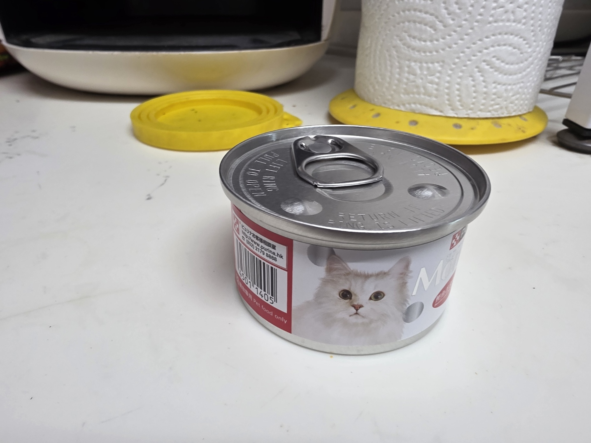
罐頭每次使用半罐，未用完請蓋上黃色萬用蓋後冷藏。
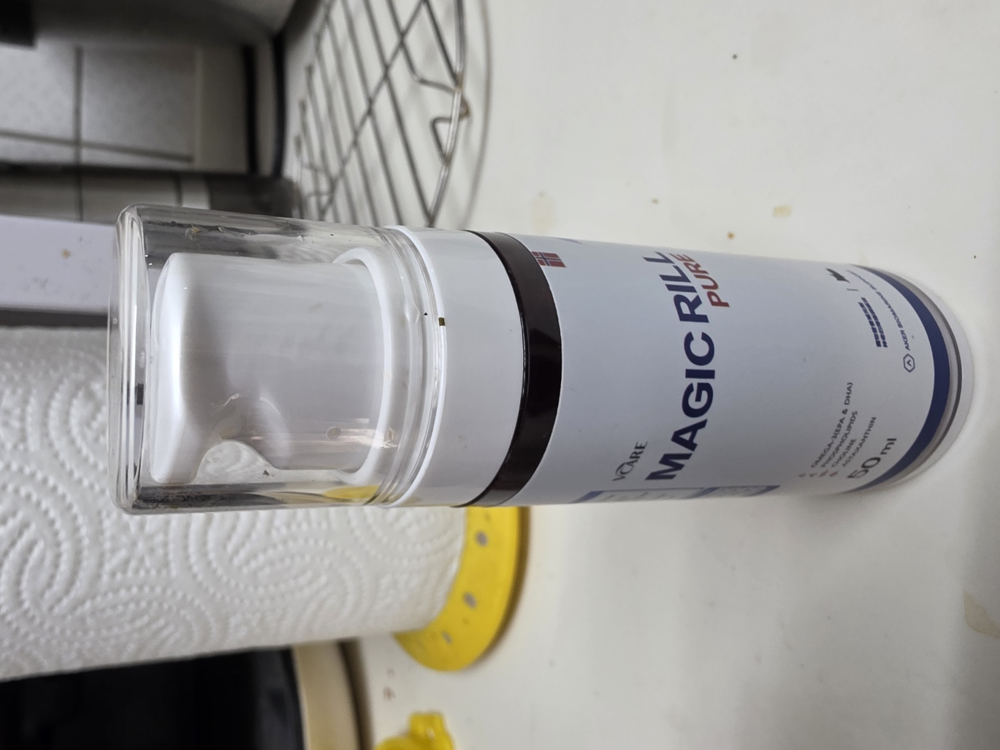
磷蝦油每次按壓一次份量，加在罐頭裡。
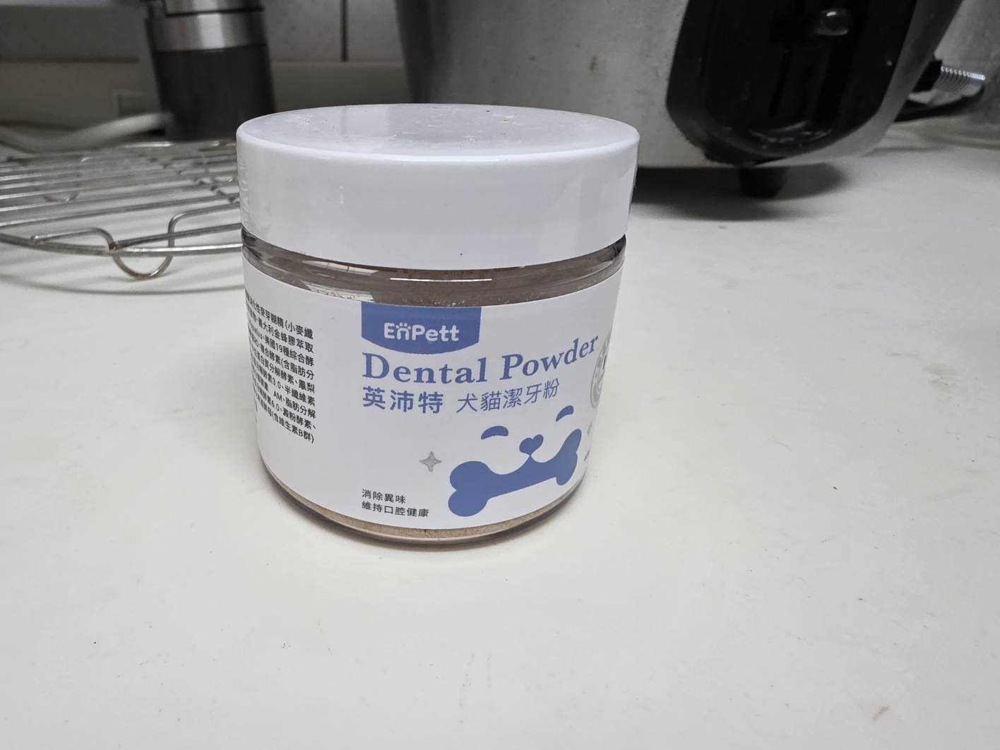
牙齒保健粉每次一匙，拌入罐頭。
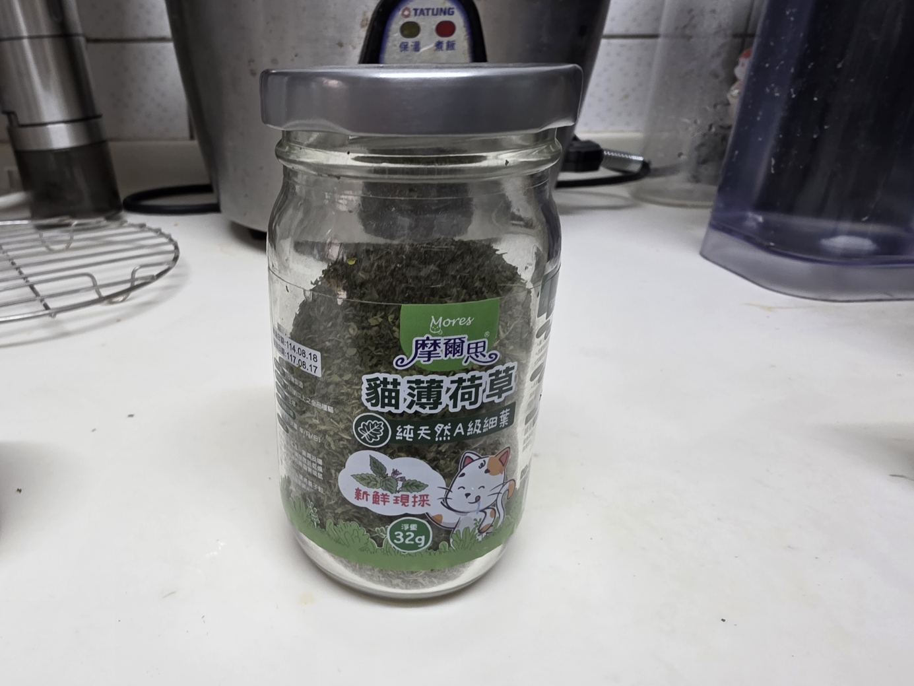
貓薄荷草每次加些許，拌入罐頭。
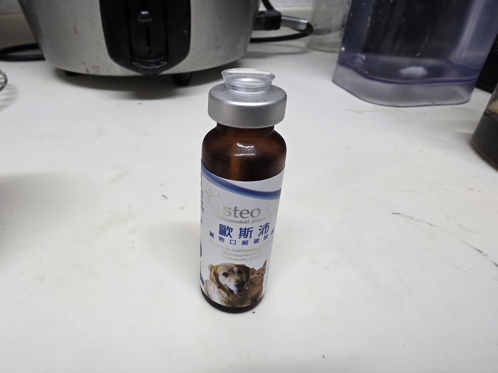
歐斯沛保健液每次用注射筒抽取 1 cc；乾肉塊需剪成小塊後加入碗中。
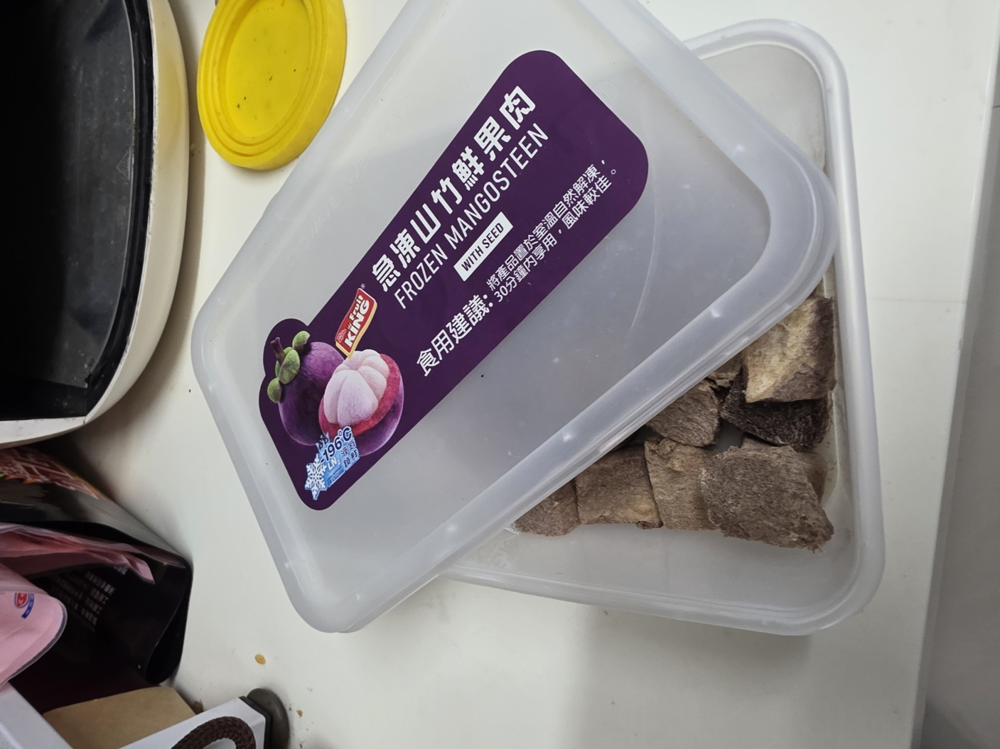
乾肉塊每次剪一塊成小塊，加入罐頭碗中。
飲水機
- 1確認飲水機有在出水：按壓一次面板按鍵後，水盤小洞應該有水湧出。
- 2按前面板下方圓鍵會亮藍光；按鍵後有出水即功能正常，飲水機會自動間歇供水。
- 3約每五天補一次水。補水時用水壺裝自來水，翻開最上方白色水盤，從透明盤上的大洞倒入。
飲水機正面。正中央下方圓鈕為面板按鍵。
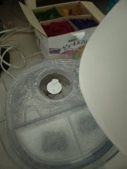
掀開上方白色水盤後，可看到透明盤上的加水孔。
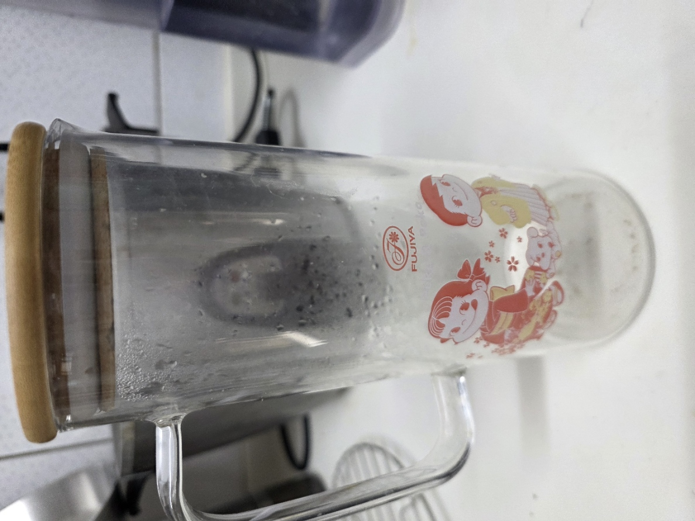
用水壺裝自來水後，從飲水機水盤下方的大孔補水。
貓砂盆
- 1用砂鏟取出便便與被尿凝結的砂團。凝結砂不易沾黏貓砂盆，稍微用力鏟一下即可整塊取出。
- 2貓砂和便便皆丟入貓砂盆旁的加蓋垃圾筒。
- 3每次清理後，用砂瓢從旁邊藍色桶中取四分之一瓢貓砂加入貓砂盆，盡量不要讓貓砂盆見底。
垃圾筒味道太重時取出垃圾袋並打結封口，換上新的垃圾袋。封口的垃圾袋放在回收筒內。
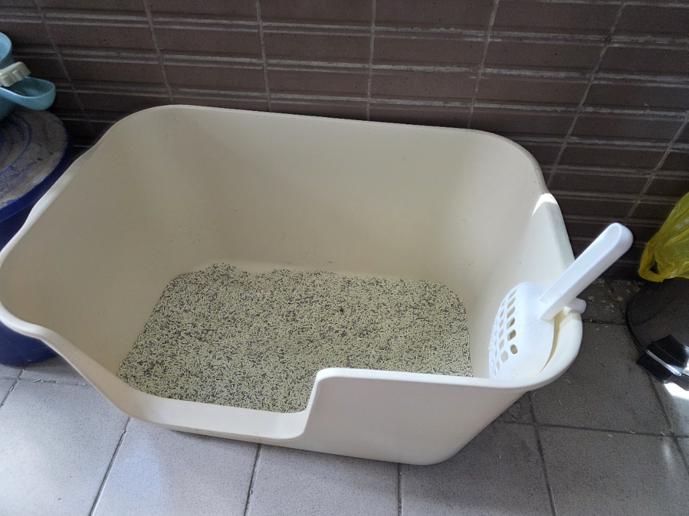
貓砂盆。清理後補四分之一砂瓢，盡量不要讓貓砂盆見底。
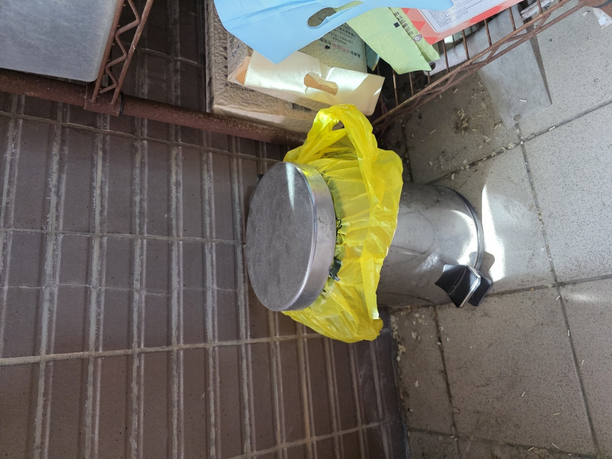
貓砂和便便皆丟入貓砂盆旁的加蓋垃圾筒。
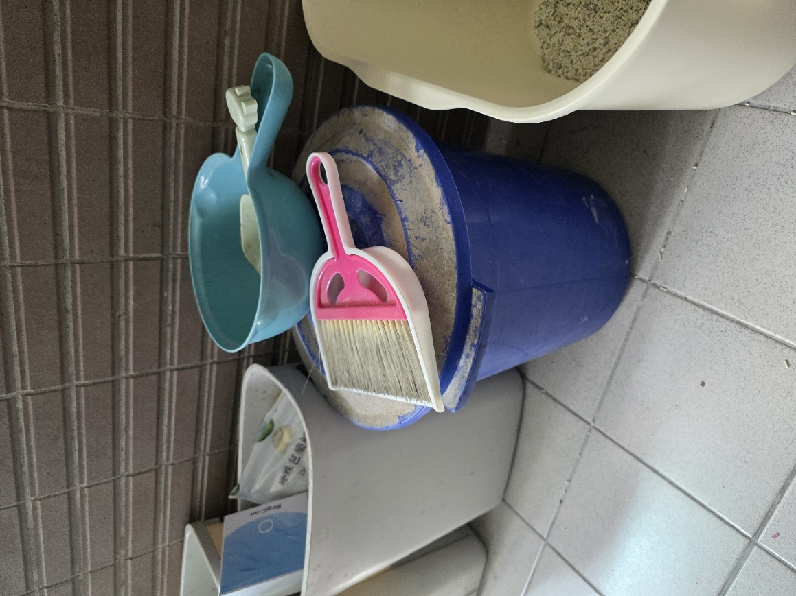
砂鏟、砂瓢與藍色貓砂桶。清理後從桶中補砂。
用品照片
以下照片來自 docs 資料夾，保留給照顧者快速辨識包裝與用品。
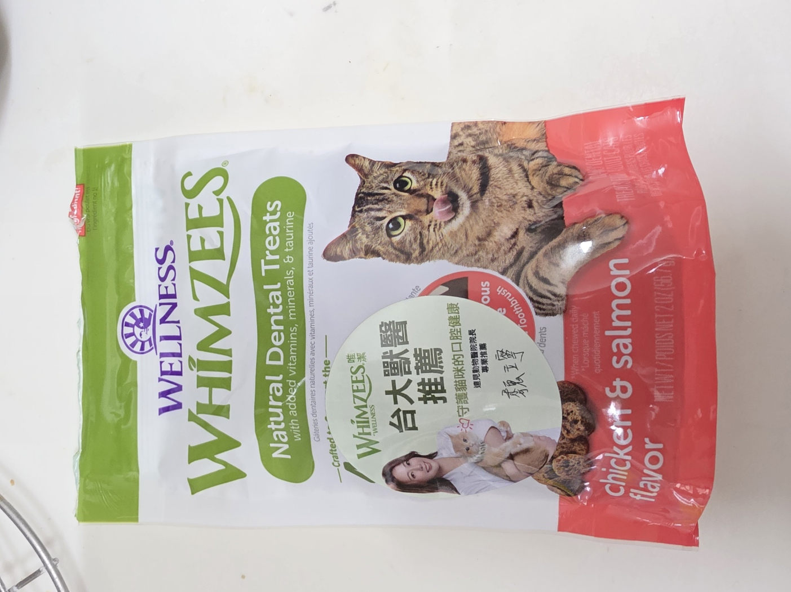
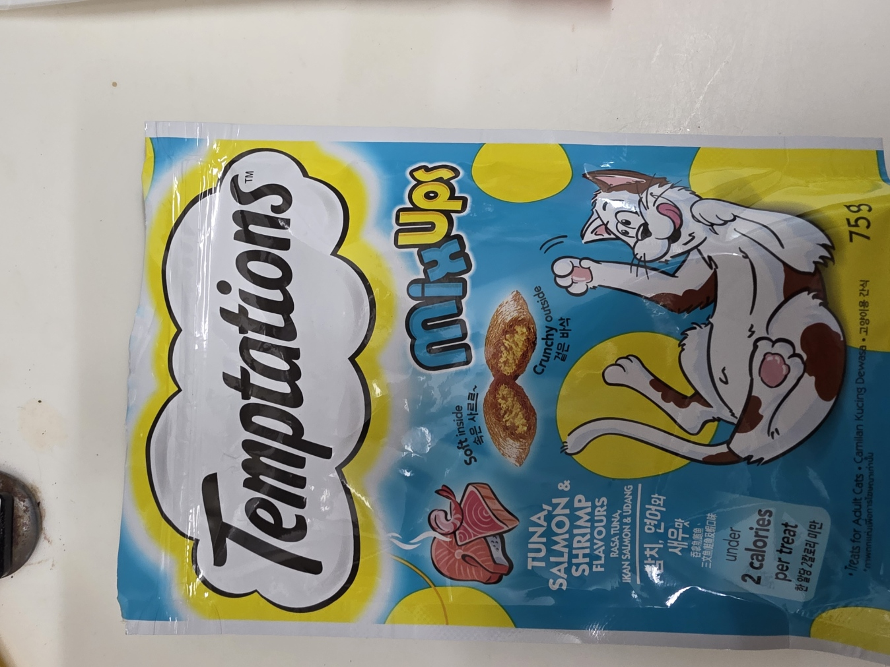
罐頭
每次半罐，加水、磷蝦油、歐斯沛保健液、牙齒保健粉、貓薄荷草與剪小塊的乾肉塊。
歐斯沛保健液
每次用注射筒抽取 1 cc 加入罐頭；用後以水龍頭吸水推出，反覆數次清潔注射筒。
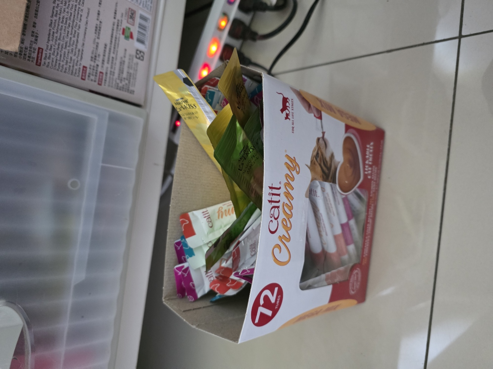